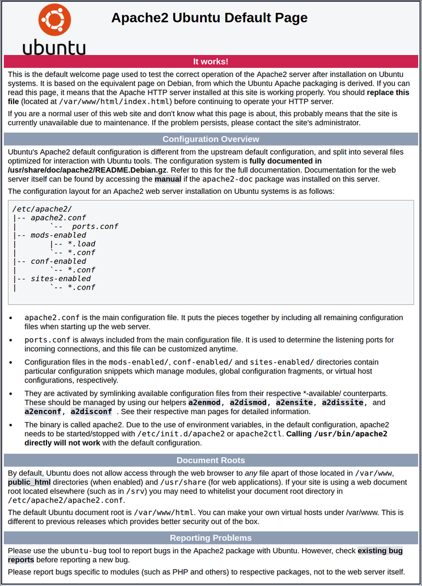

Tutorial
Как установить веб-сервер Apache в Ubuntu 18.04 ApacheUbuntu 18.04
HTTP сервер Apache является самым широко используемым веб-сервером в мире. Он предоставляет множество удобных функций включая динамически загружаемые модули, широкую поддержку мультимедиа, и интеграцию с другим популярным программным обеспечением.
В этом руководстве мы расскажем, как установить веб-сервер Apache на ваш сервер с Ubuntu 18.04.
Перед тем, как начать следовать шагам, описанным в этом руководстве, вам необходимо настроить отдельный, не-рутовый (non-root) профиль пользователя на вашем сервере с Ubuntu 18.04. Кроме того, вам потребуется настроить базовый файрвол для блокирования всех портов, кроме необходимых для работы Apache. Вы можете ознакомиться с процессом настройки аккаунта пользователя и настройкой файрвола на вашем сервере следуя шагам нашего руководства по первичной настройке сервера на Ubuntu 18.04.
После завершения создания аккаунта войдите на ваш сервер с помощью вновь созданного пользователя.
Apache доступен из дефолтных репозиториев Ubuntu, что позволяет устанавливать его с помощью средств управления пакетами.
Давайте начнём с обновления локального индекса пакетов:
Далее установим пакет apache2:
После подтверждения установки apt установит Apache и все необходимые зависимости.
Перед тестированием установки Apache необходимо изменить настройки файрвола для разрешения доступа извне к дефолным веб-портам. Если вы следовали инструкциям по настройке файрвола из руководства по первичной настройке сервера, ваш файрвол UFW уже должен быть настроен таким образом, чтобы ограничивать доступ к вашему серверу.
В процессе установки Apache регистрирует себя в конфигурации UFW, создавая несколько профилей приложения, которые могут быть использованы для включения и отключения доступа к Apache через файрвол.
Выведем профили приложений ufw следующей командой:
Вы увидите список приложений пользователей:
ВыводAvailable applications:
Apache
Apache Full
Apache Secure
OpenSSH
Как видно из этого вывода, для Apache доступно три профиля:
Рекомендуется включать самый ограниченный профиль, который будет позволять входящий трафик. Поскольку мы не настраивали SSL для нашего сервера в этом руководстве, нам потребуется включить только порт 80:
Вы можете проверить внесённые изменения командой:
В выводе вы должны видеть, что HTTP трафик разрешён:
ВыводStatus: active
To Action From
-- ------ ----
OpenSSH ALLOW Anywhere
Apache ALLOW Anywhere
OpenSSH (v6) ALLOW Anywhere (v6)
Apache (v6) ALLOW Anywhere (v6)
Как видно из этого вывода профиль был включен для разрешения доступа к веб-серверу.
Шаг 3 - Проверка вашего веб-сервера
После завершения процесса установки Ubuntu 18.04 запустит Apache. Веб-сервер уже должен быть запущен.
Проверим в системе инициализации systemd, что сервис работает, следующей командой:
Вывод● apache2.service - The Apache HTTP Server
Loaded: loaded (/lib/systemd/system/apache2.service; enabled; vendor preset: enabled)
Drop-In: /lib/systemd/system/apache2.service.d
└─apache2-systemd.conf
Active: active (running) since Tue 2018-04-24 20:14:39 UTC; 9min ago
Main PID: 2583 (apache2)
Tasks: 55 (limit: 1153)
CGroup: /system.slice/apache2.service
├─2583 /usr/sbin/apache2 -k start
├─2585 /usr/sbin/apache2 -k start
└─2586 /usr/sbin/apache2 -k start
Как видно из представленного вывода, сервис выглядит работающим корректно. Тем не менее, самый надёжный способ проверить работу Apache - это запросить веб-страницу.
Вы можете запросить дефолтную веб-страницу Apache с помощью IP адреса вашего сервера. Если вы не знаете IP адрес вашего сервера, вы можете найти его несколькими способами с помощью командной строки.
Введите следующую команду:
Она вернёт несколько адресов, разделённых пробелами. Вы можете попробовать каждый из них в вашем веб-браузере.
Другой способ заключается в использовании команды, которая позволяет увидеть ваш IP адрес из другого места в сети Интернет:
После того, как вы найдёте IP адрес вашего сервера, введите его в свой веб-браузер:
Вы должны увидеть дефолтную страницу Apache для Ubuntu 18.04:

Эта страница свидетельствует о том, что Apache работает корректно. На этой странице также представлена базовая информация о важных файлах и директориях Apache.
Шаг 4 - Управление процессом Apache
Теперь, когда у вас есть работающий веб-сервер, рассмотрим некоторые базовые команды для управления им.
Для остановки себ-сервера наберите:
Для запуска остановленного сервера наберите:
Для перезапуска сервиса наберите:
Если вы вносите какие-то изменения в конфигурацию, Apache зачастую может перезагружаться без потери открытых соединений. Для этого наберите команду:
По умолчанию Apache сконфигурирован на запуск при загрузке сервера. Вы можете отключить такое поведение следующей командой:
Для повторного включения сервиса при загрузке сервера наберите:
Теперь Apache должен опять запускаться автоматически при загрузке сервера.
Шаг 5 - Настройка виртуальных хостов (рекомендуется)
При использовании веб-сервера Apache вы можете использовать виртуальные хосты (аналог серверных блоков в Nginx) для хранения конфигурационных настроек разных сайтов. Это позволяет иметь более одного сайта на одном сервере. В этом руководстве мы будем для примера использовать доменное имя example.com, но вам следует заменить его вашим собственным доменным именем. Для того, чтобы узнать больше о настройке доменных имён в DigitalOcean, рекомендуем ознакомиться с нашим Введением в DNS DigitalOcean.
Apache для Ubuntu 18.04 уже имеет один виртуальный хост, включенный по умолчанию, который настроен на отдачу документов из директории /var/www/html. Хотя это и удобно для обслуживания одного сайта, это становится неудобным, когда сайтов несколько. Вместо того, чтобы изменять /var/www/html, давайте создадим новую структуру директорий внутри /var/www для нашего сайта example.com, оставив /var/www/html для показа дефолтной страницы пользователям в случаях, когда клиентский запрос не совпадает ни с одним из настроенных доменных имён.
Создайте директорию для example.com используя флаг -p для создания необходимых родительских директорий:
Далее настройте владельца директории с помощью переменной окружения $USER:
Теперь права должны для корневой директории быть настроены правильным образом при условии, что вы не меняли своё значение umask. На всякий случай мы можем удостовериться в этом командой:
Далее создадим страницу index.html в nano или любом другом текстовом редакторе:
Добавим в файл следующий HTML:
/var/www/example.com/html/index.html
<html>
<head>
<title>Welcome to Example.com!</title>
</head>
<body>
<h1>Success! The example.com server block is working!</h1>
</body>
</html>
Сохраните и закройте файл.
Для того, чтобы Apache мог отдавать этот контент, нам необходимо настроить виртуальный хост с корректными настройками. Вместо того, чтобы редактировать существующий файл виртуального хоста /etc/apache2/sites-available/000-default.conf, создадим новый файл для нашего сайта - /etc/apache2/sites-available/example.com.conf:
Скопируйте следующий текст настроек виртуального хоста в созданный файл:
/etc/apache2/sites-available/example.com.conf
<VirtualHost *:80>
ServerAdmin admin@example.com
ServerName example.com
ServerAlias www.example.com
DocumentRoot /var/www/example.com/html
ErrorLog ${APACHE_LOG_DIR}/error.log
CustomLog ${APACHE_LOG_DIR}/access.log combined
</VirtualHost>
Обратите внимание, что мы обновили DocumentRoot на адрес нашей новой директории, и ServerAdmin на адрес электронной почты, доступный для администратора example.com. Мы также добавили две директивы: ServerName, которая устанавливает базовое доменное имя, которое должно использоваться для хоста, а также ServerAlias, которая определяет другие имена, которые должны использоваться для отображения хоста так же, как и базовое доменное имя.
Сохраните и закройте файл после внесения изменений.
Теперь активируем профиль сайта с помощью утилиты a2ensite:
Деактивируем дефолтный сайт, определённый в 000-default.conf:
Далее проверим наши настройки на наличие ошибок:
Вы должны увидеть следующий вывод:
ВыводSyntax OK
Перезапустите Apache для применения внесённых изменений:
Теперь Apache должен работать с вашим доменным именем. Вы можете проверить это введя http://example.com в вашем браузере, где в результате вы должны увидеть что-то в этом роде:
Шаг 6 - Важные файлы и директории Apache
Теперь, когда вы знаете, как управлять сервисом Apache, вам стоит ознакомиться с важными файлами и директориями Apache.
Теперь, когда ваш веб-сервер установлен, у вас есть множество вариантов того, что делать дальше. Если вы хотите построить более полный стек приложений, вы можете ознакомиться с нашим руководством по установке и настройке стека LAMP на Ubuntu 18.04.